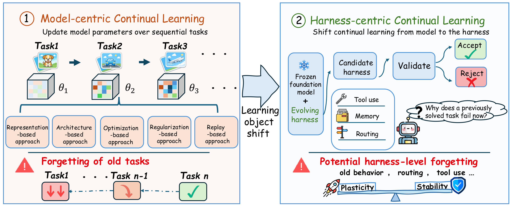
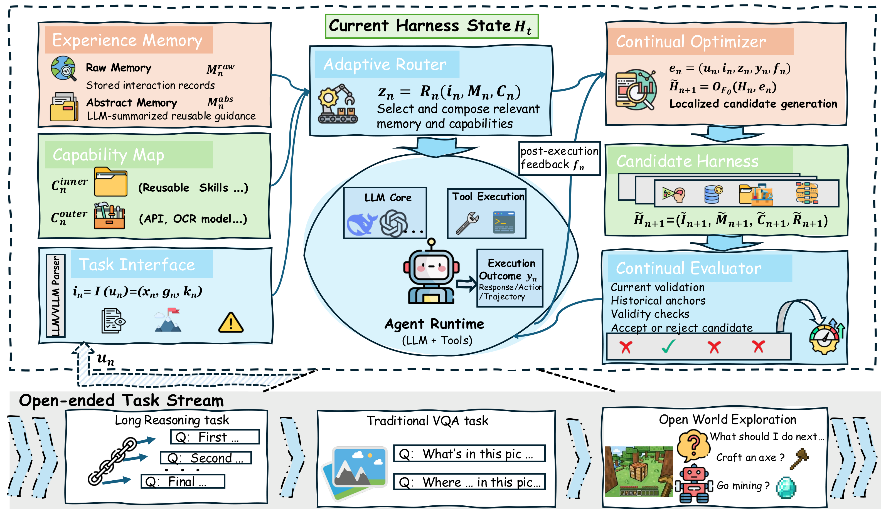

ALFWorld
Household interaction
62.98%
Final average success
+15.86 pp
vs Static Harness
Also +2.30 pp vs MemRL.
Plasticity-HCL10.94% average forgetting
Qwen3.5-9B
1 State Key Laboratory for Novel Software Technology, Nanjing University, China
2 University of Wollongong, Australia * Corresponding author
DeepSeek V4.1 Flash (reasoning effort: Max) fails at task 22, “Mine 3 coal,” and cannot proceed to subsequent tasks.
With Harness Continual Learning (HCL), the same model and reasoning effort successfully complete task 22, where the zero-shot run failed, and continue through the remaining tasks, ultimately completing all 50 tasks.
HCL makes prompts, memories, skills, and routing a persistent learning state around a frozen foundation model.
Changing that state can improve a new task and disrupt an earlier success. Frozen weights do not eliminate forgetting.

Figure 1. The learning object shifts from model parameters to the harness. Both settings face the acquisition–retention challenge.
The harness changes through feedback. Deployment changes only after evaluation.

Figure 2. The four harness components support execution; the Optimizer and Evaluator govern persistent updates.
Prompts, memories, skills, and routing rules are maintained as one evolving, jointly versioned state.
The Continual Optimizer uses execution feedback to revise selected harness components. The Continual Evaluator checks the candidate before it can enter the deployed state.
Current improvementMeet the validation-gain threshold.
Historical retentionKeep earlier-behavior regressions within budget.
Task validityRespect output, tool-use, and environment constraints.
Commit an admissible candidate; otherwise, keep the current harness. The next interaction uses the committed state.
Four settings. The same frozen model within each comparison.
Compare with a static harness in open-world tasks and with zero-shot inference in the controlled streams.
Household interaction
62.98%
Final average success
+15.86 pp
vs Static Harness
Also +2.30 pp vs MemRL.
Qwen3.5-9B
Long-horizon skill reuse
50/50
Curriculum tasks completed
+35 tasks
vs Static Harness
Fewer actions than both memory-based baselines.
deepseek-v4-flash-0731
Question answering & reasoning
76.10%
Final average accuracy
+12.45 pp
vs Zero-shot
Also +7.25 pp vs MemRL.
DeepSeek-V4.1-Flash
Visual understanding
68.92
Final mean score
+22.15 pts
vs Zero-shot
Also +3.76 pts vs MemP.
Qwen3.6-27B
Gains are absolute: pp = percentage points; pts = score points. Performance and forgetting should be read together. Metrics differ across settings.
@misc{kang2026harnesscontinuallearning,
title = {Harness Continual Learning: Continual Adaptation Beyond Model Parameters},
author = {Borui Kang and Jinrui Gu and Junhan Lv and Wenbin Li and Lei Wang and Yang Gao},
year = {2026},
eprint = {2608.19013},
archivePrefix = {arXiv},
primaryClass = {cs.LG},
url = {https://arxiv.org/abs/2608.19013}
}